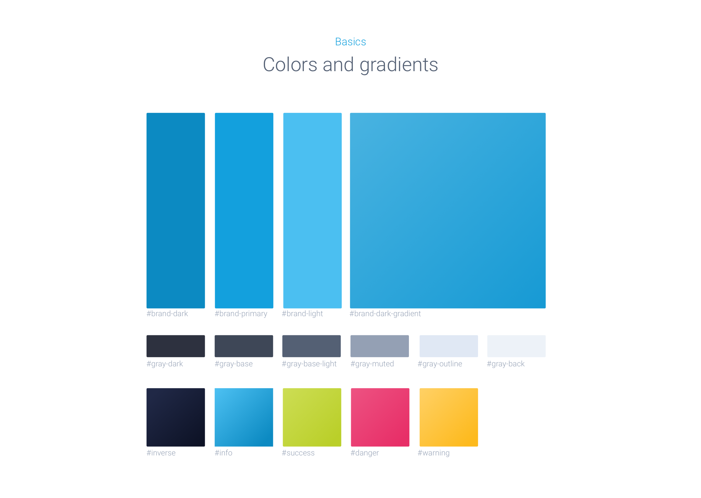

December 2016
Signkick.
The new age of out-of-home
Signkick is eager to build the technology that will revolutionize the process of buying outdoor advertising. No need to pay huge fees to media agencies that only accessible to big corporations. Signkick Platform aggregates the inventory of the biggest players of out-of-home world on one platform and make planning outdoor campaigns easy both for small companies and big businesses. I was helping out to conceptualize the future platform evolution and translate the business vision into deliverable product design.

Getting started
Signkick Technologies provides white label solution for advertising companies that simplifies selling process and allows them to manage their inventory and calendars. This is a revolutionary all-in-one product in this field.
In order to allow the product grow and provides new features to its customers, we needed to make a step backward and completely rethink the concepts. We started with defining our goals, the target audience, essential constituents and where we would like to position ourselves on the market. Then continued to defining our user groups, their goals and problems we can help them to solve, and how it can be done. It resulted creating a product map that covered the principal functionality and logic and possible grouph, which made clearer where we want to be and how we can get there. The next steps are adding more layers of detalisation to our map:
- rapid sketching the ideas
- wirframing
- creating low fidelity prototypes to share with stakeholders
- extracting an MVP and making an agile implementation plan
- creating highier fidelity mock-ups, focusing on priority features
- interactive prototypes to test with the team and users
- front-end prototipes
- making it work
- going back to the agile plan and tackle the next layer of complexity.
Paper first - sketching first ideas
Low fidelity wireframes
Re-branding. Developing new visual language.
